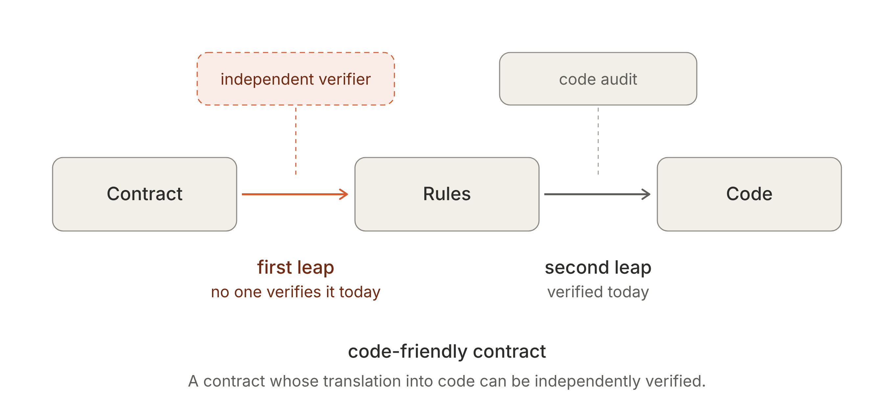

Hugo Muñoz Ureña
PhD (Law) · Blockchain Governance Engineer · Associate Investigator, Chaire DDSA, Université Laval
Between a contract and the code that performs it lies an intermediate text that no one signs. I work on whether that text is faithful to the contract, and on who should be able to show it.
Current field: tokenized securities under South Korea's electronic registration framework. Method: the first leap, from binding text to executable rules, verified by an independent third party and recorded before the code acts.

Publications
Working definition, v0.1 · Zenodo, 25 October 2026 · CC BY-ND 4.0 · time-stamped with OpenTimestamps (Bitcoin block 973151)
A contract whose translation into code can be independently verified.
Muñoz Ureña, H. (2026). Code-friendly contract: Definition of a term for the drafting and verification of contracts performed by code (Version 0.1). Zenodo. https://doi.org/10.5281/zenodo.23652576
CROSSWALK No. 1 — The KSD Guideline, read from the contract · 계약·코드 대응표 제1호
Reference table, v1.0 · Zenodo, 8 October 2026 · CC BY-ND 4.0
The guideline verifies that the code follows the business rules. Verifying that the business rules follow the contract is not yet anyone's task.
Muñoz Ureña, H. (2026). CROSSWALK No. 1 — The KSD Guideline, read from the contract · 계약·코드 대응표 제1호 (Version 1.0). Zenodo. https://doi.org/10.5281/zenodo.23245237
With Geneviève Parent · Contribution to the UN Special Rapporteur on the right to food, consultation on science, technology and food systems · Chaire DDSA, Université Laval, October 2026 · French
Digital technologies serve food security and diversity only if communities can verify that the coded rule reflects what they decided.
Policy paper · SSRN, July 2026
Muñoz Ureña, H. (2026). When the Code Keeps Its Promise But the Contract Doesn't: A Governance Gap in South Korea's Tokenized Securities Framework. SSRN. https://doi.org/10.2139/ssrn.7124760
Public comments to regulators
Monetary Authority of Singapore — Consultation Paper P015-2026
Personal-capacity response, 8 September 2026 · proposes the distinction between verified capability and declared capability, and the capability attestation as a document